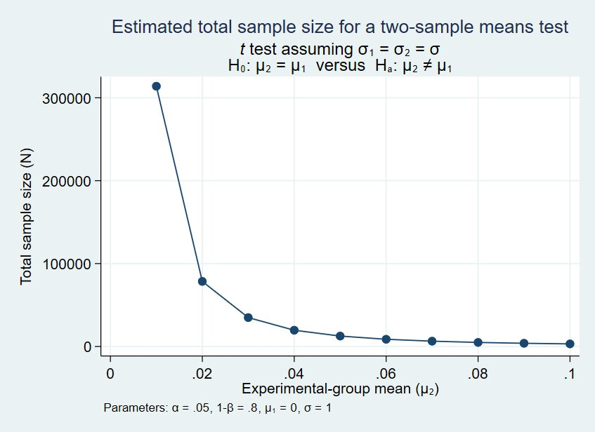

Introduction to power calculations
Power calculations play a critical role in determining the number of people or households to include in a Randomized Control Trial (RCT). Further, statistical tests are prone to type 1 and type 2 errors. We can reduce the probability of such errors by increasing the sample size. However, in practice, sample size is determined by the amount of resources at hand since there is a trade off between the sample size and the cost of data collection.
Spillovers in RCTs are also a cause of concern for researchers. As a result, we might also use clusters in RCT to tackle spillovers effects. However, clustering often requires a larger sample size as we are stratifying the sample into different clusters.
Clustered RCTs are more prone to type 1 and type 2 errors than an unclustered RCT design with the same number of individuals or households. The way we assign individuals to different experimental groups can also reduce the incidence of type 1 and type 2 errors. For instance, using characteristics such as gender to stratify the randomization.
Type 1 and type 2 errors
When conducting RCTs, we are guided by the principle of conservatism. We do not want to promote costly policy changes without evidence. We stack the deck against ourselves by making an assumption that there is no impact made by the intervention. Given this assumption, we check whether our data is consistent with this assumption, which is called the null hypothesis. It is denoted by \(H_0\). While making inference, we are prone to these two types of errors which are shown below.
| Test Statistic | \(H_0=T\) | \(H_0=F\) |
|---|---|---|
| \(t<=2\) | Correct Inference | Type 2 error |
| \(t>=2\) | Type 1 error | Correct inference |
Here, the test statistic measures the difference in average outcomes between the treatment and control group as a result of the intervention. Type 1 error occurs when we incorrectly reject the null hypothesis \(H_0\) when it is actually true. Type 2 error occurs when we fail to reject the \(H_0\) when it is actually false.
Statistical power
By understanding the type 1 and type 2 errors, we can calibrate the power of a statistical test. Power of a statistical test is the probability of rejecting a null hypothesis \(H_0\) when it is false.In general, it is the likelihood of not making a type 2 error. \[Power (\kappa): 0<\kappa<1\]
The level of significance determines how conservative or cautious we want to be in jumping to conclusion about the effectiveness of an intervention. The significance level determines the chance of making type 1 error. It is also referred as the size of a test denoted by \(\alpha\). We would like to make sure we reject \(H_0\) when there is an effect. More power means we have a better chance to do so.
What determines power?
- Effect size (\(\beta\)): When running a RCT, the effect size is the difference between the average outcome of the control and treatment group. A large effect size increases the power of a statistical test.
- Sample size (\(n\)): Increasing the sample size increases the power of a statistical test. Suppose we have an outcome variable \(X\). Variance of the estimated difference in means is related to the variance of underlying variable \(X\) and the sample size. As sample size increases, the variance of the estimated difference in meanse reduces thereby increasing power. A reduction in variance of \(X\) also reduces the variance of the estimated difference in means (control and treatment group).
For instance, in evaluating an education project, we can work with sample or individuals whose outcomes we expect to be relatively homogeneous. To do so, we can focus on kids in a single grade of primary school or work with a narrow age range instead of working with children in all grades.
What you gain in terms of power you lose in terms of external validity.
The power formula
When we talk about power (\(\kappa\)), we need to consider these elements:
- Size of a test: \(\alpha\)
- Effect size: \(\beta\) (\(b\) is the estimated treatment effect from the sample: \(\bar{X_T}-\bar{X_C}\), where T and C corresponds to treatment and control group)
- Variance of the underlying outcome data: \(\sigma^2\)
- Sample size: \(n\)
In practice, we fix \(\alpha\), \(n\) and \(\kappa\) given any \(\sigma^2\) and reduce the five way relationship into a two way relationship between \(\beta\) and \(n\). Doing so, we can either input an expected effect size (\(\beta\)) to get the sample size (\(n\)) or input sample size (\(n\)) to get a minimum detectable effect size.
The minimum detectable effect size is the smallest effect that can be detected with a given probability by a statistical test at a certain significance level.
The power formula for a sample split into two groups with equal proportions to treatment and control group is: \[\beta=2*(z_{1-\kappa}+z_{\alpha/2})*\sigma/\sqrt n\] Dividing both sides by \(\sigma\), we get: \[\beta/\sigma=2*(z_{1-\kappa}+z_{\alpha/2})*1/\sqrt n\] Here, \(\beta/\sigma\) is the minimum detectable effect size for a sample split in two groups with equal proportion.
Visit this site to know more about the power formula.
We can invert the power formula to estimate the sample size required for a given minimum detectable effect. The formula is two groups split into equal proportions.
\[n=4*(z_{1-\kappa}+z_{\alpha/2})^2*(\sigma/\beta)^2\]
Researchers usually use a power size of 0.8 or higher. In may situations we expect to have a minimum detectable effect size of 0.2 standard deviations.
Here, we assume that the underlying variable follows a normal distribution with a known variance. But in practice, such assumption do not hold. In such cases we use a modified version of the power formula using the t statistic.
\[\beta=2*(t_{1-\kappa}+t_{\alpha/2})*S/\sqrt n\]
where,
- t statistic corresponds to the critical values of t distribution with \(n-2\) degrees of freedom.
- S is the square root of the estimated sample variance.

Targeting a smaller and smaller effect size results in a sample size that rises at a steeper and steeper rate. Here, \(1-\beta\) corresponds to the power of a test.
References
Impact evaluation Methods with Applications in Low- and Middle-Income Countries, World Bank